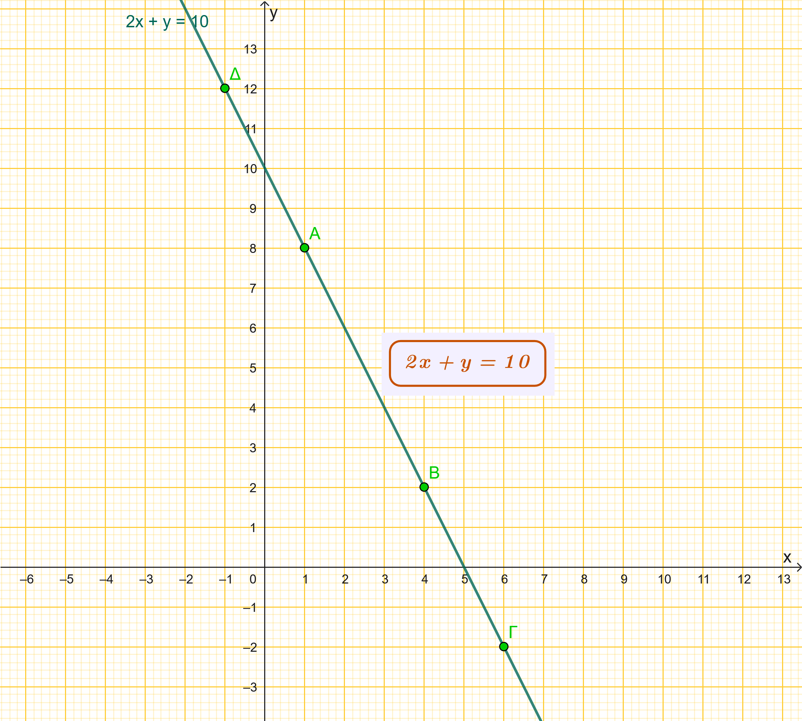
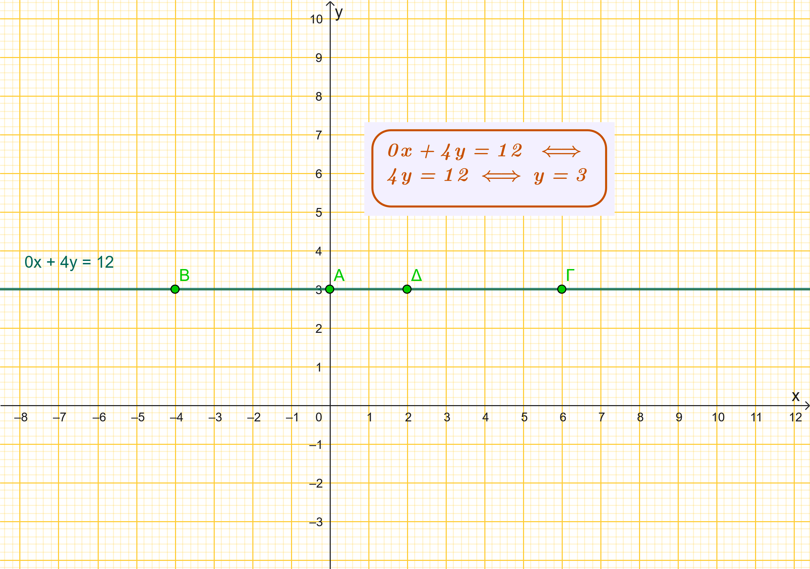
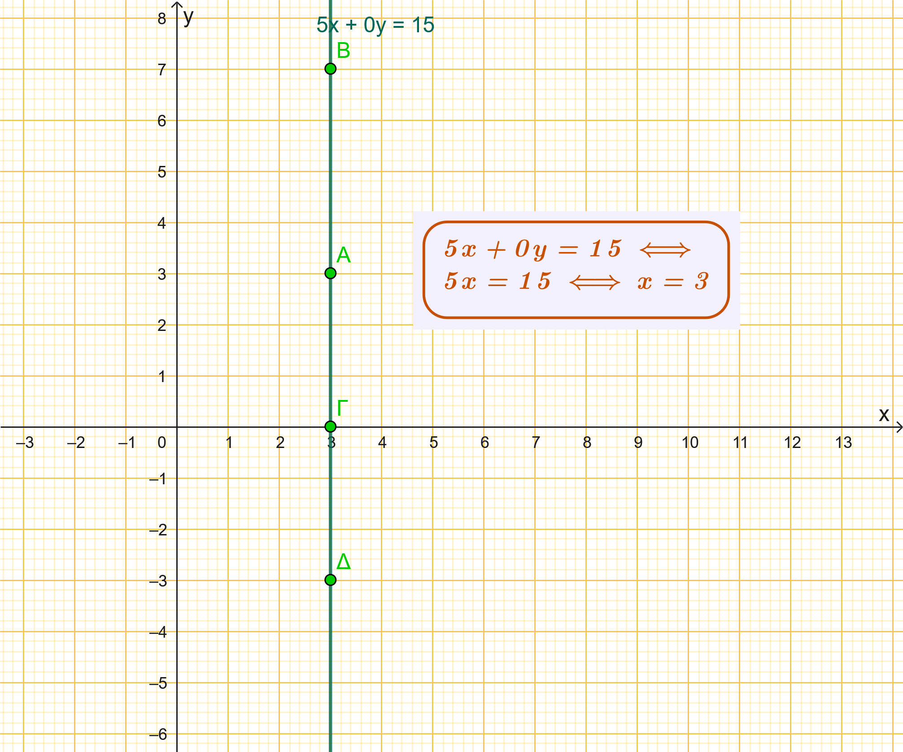
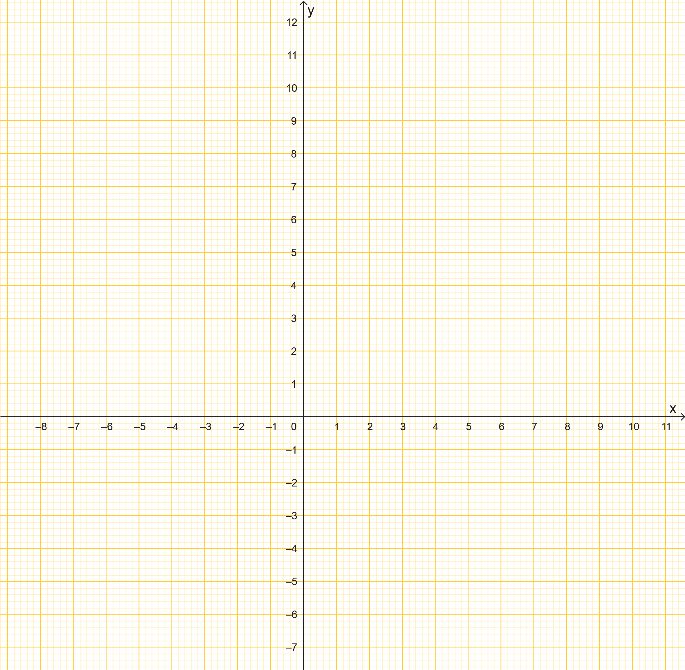
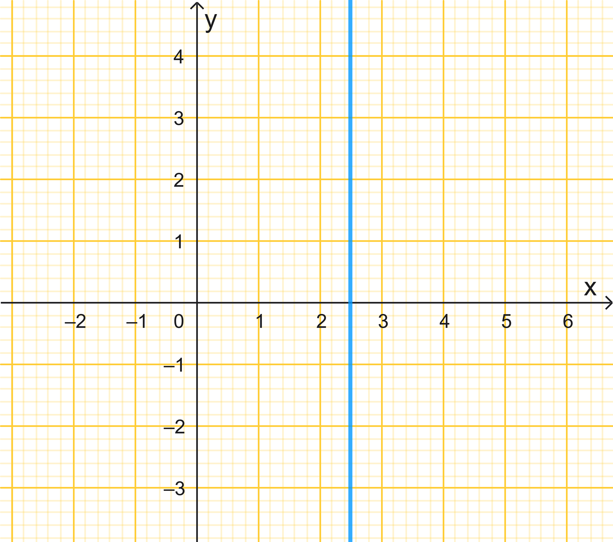
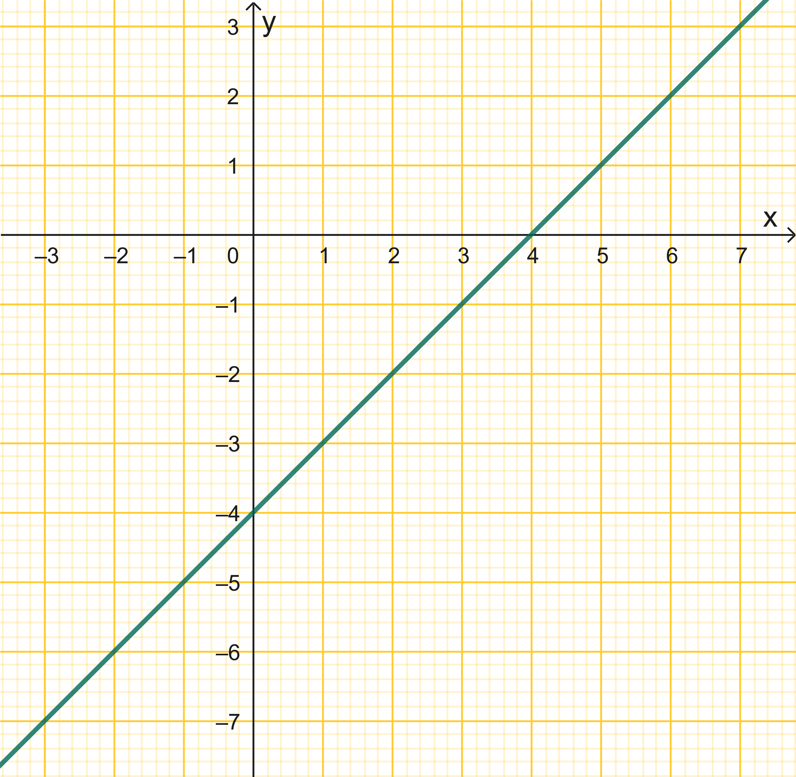
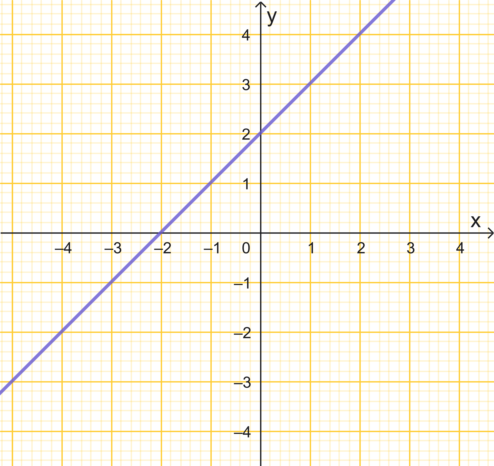
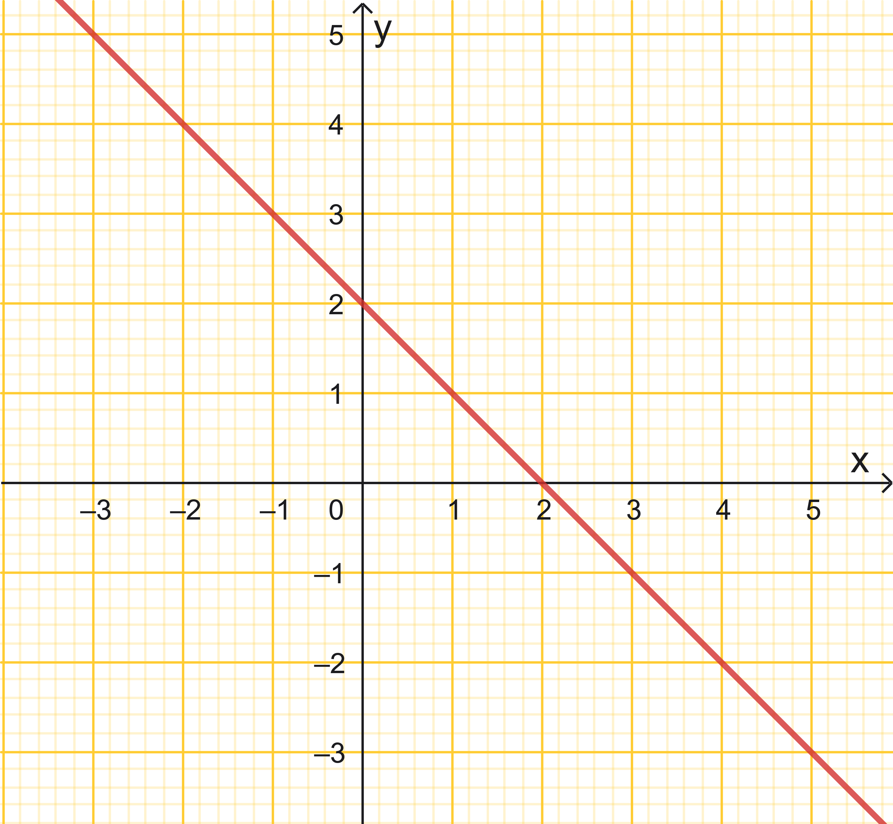
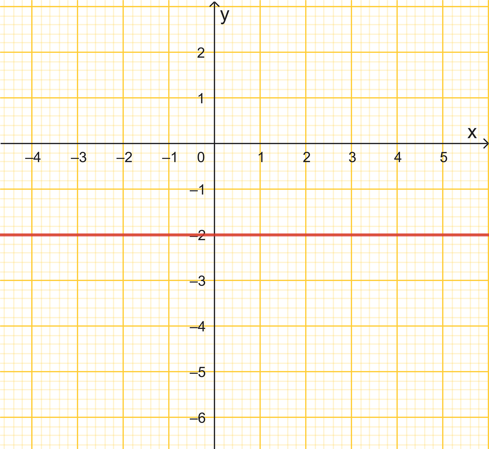

1 Η έννοια της γραμμικής εξίσωσης
1.1 Θεωρία
Η έννοια της γραμμικής εξίσωσης (ή εξίσωσης πρώτου βαθμού) αναφέρεται σε κάθε ισότητα η οποία περιέχει μία ή περισσότερες μεταβλητές (αγνώστους) των οποίων ο εκθέτης είναι η μονάδα. Μια εξίσωση αληθεύει για ορισμένες τιμές των γραμμάτων της, οι οποίες ονομάζονται λύσεις ή ρίζες της εξίσωσης.
1.1.1 1. Γραμμική Εξίσωση με έναν άγνωστο Εχει διδαχτεί
Μια εξίσωση πρώτου βαθμού με έναν άγνωστο \(x\) έχει τη γενική μορφή \(\alpha x + \beta = 0\). Για την επίλυσή της διακρίνονται οι εξής περιπτώσεις:
- Μοναδική λύση: Αν \(\alpha \neq 0\), τότε η εξίσωση έχει μοναδική λύση την \(x = -\dfrac{\beta}{\alpha}\).
- Αδύνατη εξίσωση: Αν \(\alpha = 0\) και \(\beta \neq 0\), η εξίσωση παίρνει τη μορφή \(0 \cdot x = -\beta\) και δεν έχει καμία λύση.
- Αόριστη εξίσωση (Ταυτότητα): Αν \(\alpha = 0\) και \(\beta = 0\), η εξίσωση παίρνει τη μορφή \(0 \cdot x = 0\) και αληθεύει για κάθε πραγματικό αριθμό.
Παραδείγματα:
* Η εξίσωση \(3x - 7 = x + 5\) καταλήγει στην \(2x = 12\), άρα έχει μοναδική ρίζα την \(x = 6\).
* Η εξίσωση \(x + 4 = x + 5\) καταλήγει στην \(0x = 1\) και είναι αδύνατη.
* Η εξίσωση \(2(x + 3) = 2x + 6\) καταλήγει στην \(0x = 0\) και είναι ταυτότητα.
1.1.2 2. Γραμμική Εξίσωση με δύο αγνώστους
Κάθε εξίσωση της μορφής \(\alpha x + \beta y + \gamma = 0\) (όπου \(\alpha \neq 0\) ή \(\beta \neq 0\)) ονομάζεται γραμμική εξίσωση με δύο αγνώστους.
- Λύσεις: Οι λύσεις της είναι άπειρα διατεταγμένα ζεύγη αριθμών \((x, y)\) που την επαληθεύουν.
- Γραφική Παράσταση: Στο επίπεδο των συντεταγμένων, το σύνολο των λύσεων μιας τέτοιας εξίσωσης παριστάνεται πάντοτε από μια ευθεία γραμμή.
Παράδειγμα: Στην εξίσωση \(2x + y = 10\), αν θέσουμε \(x = 0\) βρίσκουμε \(y = 10\), ενώ αν θέσουμε \(x = 1\) βρίσκουμε \(y = 8\). Τα ζεύγη \((0, 10)\) και \((1, 8)\) είναι δύο από τις άπειρες λύσεις της.
Η ευθεία που μας δείχνει τα άπειρα σημεία (λύσεις) της εξίσωσης είναι η παρακάτω

Οι συντεταγμένες των σημείων Α,Β,Γ,Δ και όλων των σημείων της ευθείας επαληθεύουν την εξίσωση και αντιστρόφως κάθε ζεύγος (x,y) που επαληθεύει την εξίσωση αναγκαστικά θα ανήκει στην ευθεία.
1.2 Ειδικές περιπτώσεις
Στην εξίσωση της μορφής \(\alpha x + \beta y = \gamma\), η οποία παριστάνει μια ευθεία γραμμή στο επίπεδο, οι τιμές των συντελεστών \(\alpha, \beta\) και του σταθερού όρου \(\gamma\) καθορίζουν τη θέση και τη μορφή της. Οι ειδικές περιπτώσεις είναι οι εξής:
1.2.1 1. Περίπτωση \(\alpha = 0\) (με \(\beta \neq 0\))
Όταν ο συντελεστής του \(x\) είναι μηδέν, η εξίσωση παίρνει τη μορφή \(\beta y = \gamma\) ή \(y = \dfrac{\gamma}{\beta}\).
Γεωμετρική ερμηνεία: Παριστάνει μια ευθεία παράλληλη προς τον άξονα των τετμημένων (\(Ox\)).

Σημείο τομής: Η ευθεία τέμνει τον άξονα των τεταγμένων (\(Oy\)) στο σημείο \((0, \dfrac{\gamma}{\beta})\).
Ειδικά αν \(\gamma = 0\): Η εξίσωση γίνεται \(y = 0\) και συμπίπτει με τον άξονα \(Ox\).
1.2.2 2. Περίπτωση \(\beta = 0\) (με \(\alpha \neq 0\))
Όταν ο συντελεστής του \(y\) είναι μηδέν, η εξίσωση παίρνει τη μορφή \(\alpha x = \gamma\) ή \(x = \frac{\gamma}{\alpha}\).
* Γεωμετρική ερμηνεία: Παριστάνει μια ευθεία παράλληλη προς τον άξονα των τεταγμένων (\(Oy\)).

* Σημείο τομής: Η ευθεία τέμνει τον άξονα των τετμημένων (\(Ox\)) στο σημείο \((\frac{\gamma}{\alpha}, 0)\).
* Ειδικά αν \(\gamma = 0\): Η εξίσωση γίνεται \(x = 0\) και συμπίπτει με τον άξονα \(Oy\).
1.2.3 3. Περίπτωση \(\alpha = \beta = 0\)
Όταν και οι δύο συντελεστές των αγνώστων είναι μηδέν, η εξίσωση παίρνει τη μορφή \(0 \cdot x + 0 \cdot y = \gamma\).
* Αν \(\gamma \neq 0\): Η εξίσωση καταλήγει στην αδύνατη ισότητα \(0 = \gamma\). Στην περίπτωση αυτή, η εξίσωση ονομάζεται αδύνατη και δεν υπάρχει κανένα σημείο στο επίπεδο που να αποτελεί λύση της.
* Αν \(\gamma = 0\): Η εξίσωση παίρνει τη μορφή \(0 \cdot x + 0 \cdot y = 0\), η οποία επαληθεύεται για οποιοδήποτε ζεύγος πραγματικών αριθμών \((x, y)\).
1.2.4 4. Περίπτωση \(\alpha = \beta = \gamma = 0\)
Όταν όλοι οι όροι της εξίσωσης είναι μηδέν, έχουμε τη μορφή \(0 = 0\).
* Χαρακτηρισμός: Η εξίσωση είναι αόριστη ή ταυτότητα.
* Λύσεις: Το σύνολο των σημείων-λύσεων είναι ολόκληρο το επίπεδο, καθώς κάθε ζεύγος συντεταγμένων \((x, y)\) την επαληθεύει.
1.3 Ασκήσεις
- Δίνεται η εξίσωση \(3x-8y=24\).
Να σχεδιάσετε την ευθεία σε ορθογώνιο σύστημα συντεταγμένων
Αν ένα σημείο Α έχει τετμημένη -2, ποια πρέπει να είναι η τεταγμένη του για να αποτελεί λύση της εξίσωσης;
Αν ένα σημείο Β έχει τεταγμένη 2, ποια πρέπει να είναι η τετμημένη του για να αποτελεί λύση της εξίσωσης;
Σχέδιο

- Να εξετάσετε αν αληθεύουν τα παρακάτω
| ΝΑΙ/ΟΧΙ | |
|---|---|
| Το σημείο (-2,2) ανήκει στην ευθεία 2x-5y=-14 | |
| Η ευθεία \(5x-y=7\) περνάει από την αρχή των αξόνων | |
| Η ευθεία \(3x-2y=6\) τέμνει τον άξονα y'y στο σημείο (0,3) | |
| Η ευθεία \(3x+2y=6\) τέμνει τον άξονα x'x στο σημείο (-2,0) | |
| Το σημείο (-3,3) δεν ανήκει στη ευθεία \(x-y=0\) |
- Να συμπληρώσετε τον πίνακα αντιστοιχίζοντας σε κάθε ευθεία ε των παρακάτω σχημάτων μία από τις εξισώσεις:
| \(x=2,5\) |  |
| \(x+y=2\) |  |
| \(y=-2\) |  |
| \(x-y=4\) |  |
| \(-x+y=2\) |  |
- Να σχεδιάσετε στο ίδιο σύστημα αξόνων τις ευθείες:
\(ε_1 : 3x - 2y = 6\)
\(ε_2 : -6x + 4y = 10\)
\(ε_3: 12x - 8y = 2\) Τι παρατηρείτε;
Σημεία τομής- Εμβαδόν Να βρείτε τα σημεία τομής Α και Β της ευθείας \(2x+6y=12\) με τους άξονες x’x , y’y και το εμβαδόν του τριγώνου \(\triangle \ ΟΑΒ\)
Έλεγχος λύσης: Να εξετάσετε αν τα διατεταγμένα ζεύγη \((1, 4)\) και \((-2, 7)\) αποτελούν λύσεις της εξίσωσης \(x + y = 5\).
Εύρεση ζευγών: Για την εξίσωση \(5x + 2y - 12 = 0\), να βρείτε τρεις διαφορετικές λύσεις με τη μορφή διατεταγμένων ζευγών.
Συμπλήρωση πίνακα: Δίνεται η εξίσωση \(2x + 3y - 6 = 0\). Να συμπληρώσετε τον πίνακα.
| \(2x + 3y - 6 = 0\) | |
|---|---|
| x | y |
| x=-2 | |
| x=3 | |
| y=8 | |
| y=-1 | |
| x=-1 | |
| y=-2 | |
| x=2 | |
Ανοικτή επαλήθευση: Να εξετάσετε αν το ζεύγος \((6, 0)\) είναι λύση της εξίσωσης \(5x + 2y - 12 = 0\).
Επιλογή αγνώστου: Να λύσετε την εξίσωση \(2x + y = 10\) ως προς \(y\) και να βρείτε τη λύση που αντιστοιχεί σε \(x = 2\).
Εύρεση σταθεράς: Να προσδιορίσετε τον αριθμό \(\alpha\), ώστε η εξίσωση \(5x + 2y = \alpha\) να έχει ως λύση το διατεταγμένο ζεύγος \((4, 7)\).
Παράμετρος σε ευθεία: Στην εξίσωση \(y = \alpha x + 2\), να βρείτε το \(\alpha\) αν γνωρίζετε ότι η γραφική της παράσταση διέρχεται από το σημείο \(A(-7, -12)\).
Σταθερός όρος: Να βρείτε το \(\beta\) στη συνάρτηση \(y = -3x + \beta\), αν το σημείο \(B(-2, 4)\) ανήκει στη γραφική της παράσταση.
Τομή με άξονες: Να κατασκευάσετε την ευθεία που παριστάνει η εξίσωση \(2x + 3y = 9\) βρίσκοντας τα σημεία τομής της με τους άξονες \(Ox\) και \(Oy\).
Ευθεία από την αρχή: Να σχεδιάσετε τη γραφική παράσταση της εξίσωσης \(3x - 2y = 0\), αφού βρείτε ένα σημείο της εκτός από την αρχή των αξόνων.
Γενική κατασκευή: Να σχεδιάσετε στο ίδιο σύστημα αξόνων τις ευθείες \(y = x\) και \(y = -x\).
Πολυωνυμική μορφή: Να φέρετε την εξίσωση \(2(x - 1) - 3(y + 2) = 0\) στη μορφή \(\alpha x + \beta y + \gamma = 0\) και να την παραστήσετε γραφικά.
Κατακόρυφη ευθεία: Να σχεδιάσετε τη γραφική παράσταση της εξίσωσης \(x - 2 = 0\) και να περιγράψετε τη θέση της ως προς τους άξονες.
Οριζόντια ευθεία: Να σχεδιάσετε την ευθεία \(y + 2 = 0\). Ποια είναι η τεταγμένη όλων των σημείων της;.
Άξονες συντεταγμένων: Ποια εξίσωση παριστάνει τον άξονα των τεταγμένων (\(y'y\)) και ποια τον άξονα των τετμημένων (\(x'x\));.
Σημείο και αρχή: Ποια είναι η εξίσωση της ευθείας που περνά από την αρχή των αξόνων \(O(0,0)\) και από το σημείο \(M(4, 6)\);.
Θυμηθείτε: Πρέπει \(y=ax\)
- Κλίση και σημείο: Να βρείτε την εξίσωση της ευθείας που έχει κλίση \(\lambda = \dfrac{2}{3}\) και περνάει από το σημείο \((0,2)\).
Θυμηθείτε: Πρέπει \(y=\dfrac{2}{3}x+β\)
Πρόβλημα γεωμετρίας: Ένα ορθογώνιο έχει περίμετρο \(75\) cm. Να γράψετε τη γραμμική εξίσωση που συνδέει τα μήκη των πλευρών του \(x\) και \(y\).
Σχετική θέση: Να εξετάσετε γραφικά αν οι ευθείες \(2x + 3y = 9\) και \(6x + 9y = 4\) έχουν κοινά σημεία.
\[\bbox[yellow, 5px]{\color{blue}\Large\text{---}}\]
ΚΑΛΗ ΜΕΛΕΤΗ!